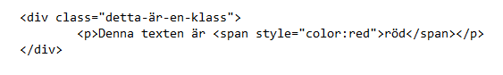

Hur fungerar CSS?
CSS kan med fördel användas tillsammans med HTML.
Det finns 3 olika sätt att använda CSSen. Det finns extern, intern och inline.
Detta är extern CSS som måste länkas. Här har vi även egenskaper

Detta är intern CSS som måste skriva innanför style-taggar och har prioritet före extern CSS
Detta är hur det kan se ut vid inline CSS och har prioritet före intern CSS
När är det bra att använda vad?

När man pratar om arv